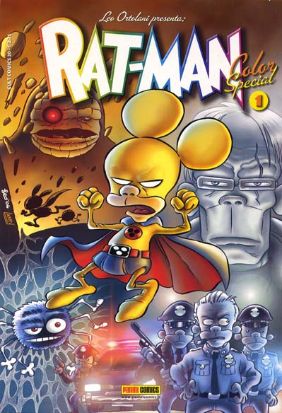

Color Special n. 1
Agosto 2004origini 1

- Contiene
- Le sconvolgenti origini del Rat-Man!, Rat-Man contro il Ragno!, La minaccia verde!
- Coloristi
- Lorenzo Ortolani, Gian Luca Raimondi, Pamela Brughera, Francesco Marconi Galvagno
- Prima uscita in B/N
- Le origini: rivista Spot, giugno 1989. Le altre due storie: Rat-Man serie autoprodotta (Edizioni Foxtrot), 1995
Perché è importante
Il punto zero, ora in technicolor: "Le sconvolgenti origini del Rat-Man!" è la storia con cui Leo Ortolani presentò al mondo nel 1989 il suo supereroe con le orecchie da topo — piccolo, presuntuoso, irresistibilmente inetto — parodia del fumetto americano che finirà per superare in longevità molti dei modelli che sbeffeggia. A seguire, i primi scontri con le nemesi parodiche: il Ragno e la Minaccia Verde, ovvero Spider-Man e Goblin passati nel frullatore ortolaniano.
Curiosità
La collana nacque come esperimento estivo di soli due numeri, pensato per il pubblico da spiaggia delle edicole; andò così bene che diventò una serie regolare, soprannominata dai fan "il Coloratto". La colorazione è supervisionata da Lorenzo "Larry" Ortolani, fratello di Leo e colorista storico del personaggio.